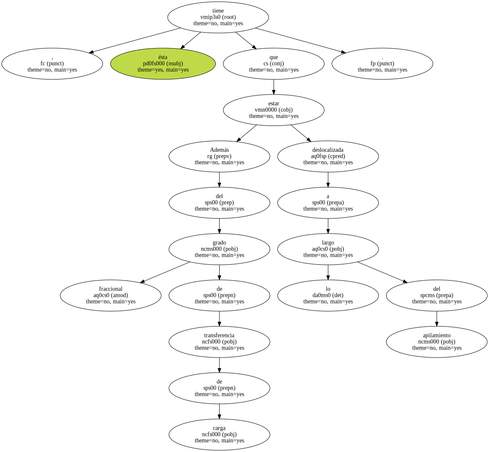
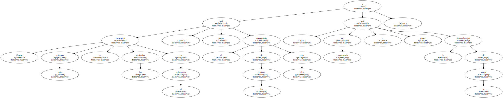
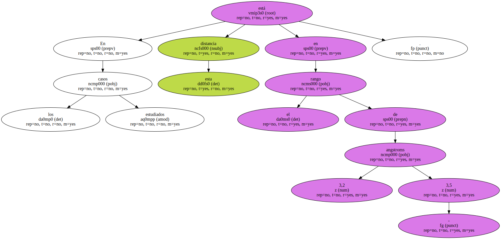
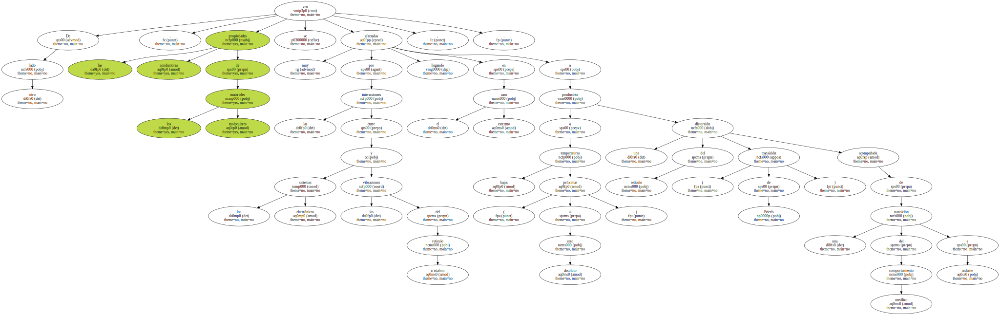
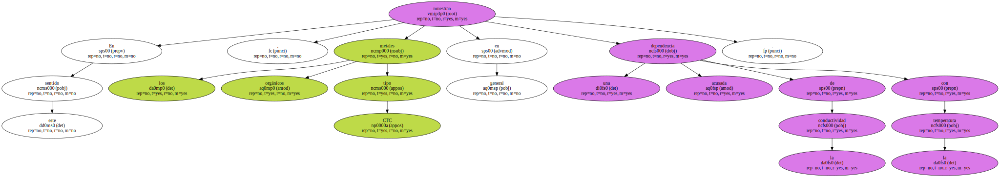
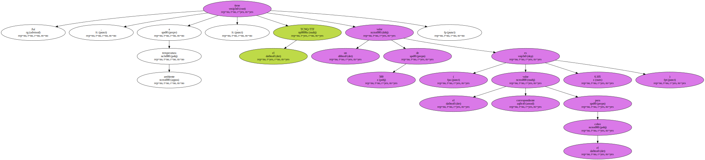
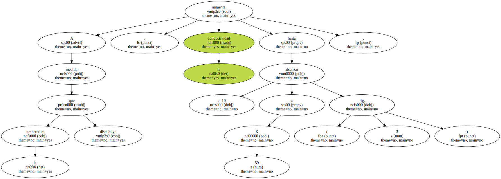
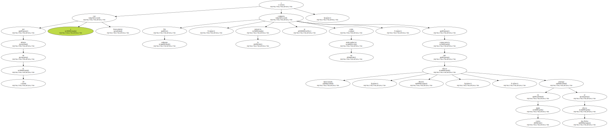
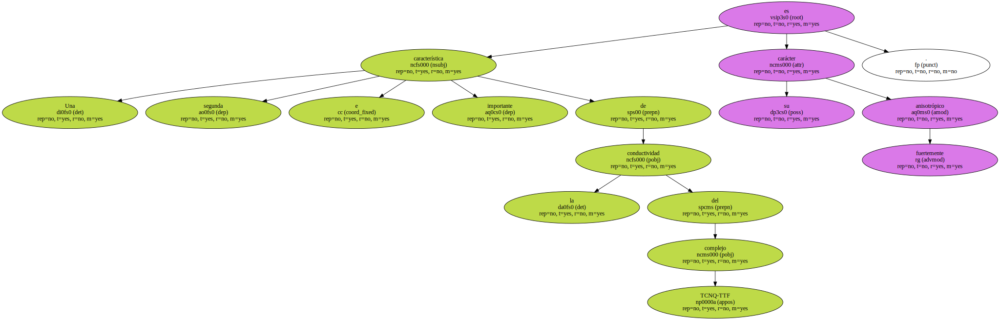
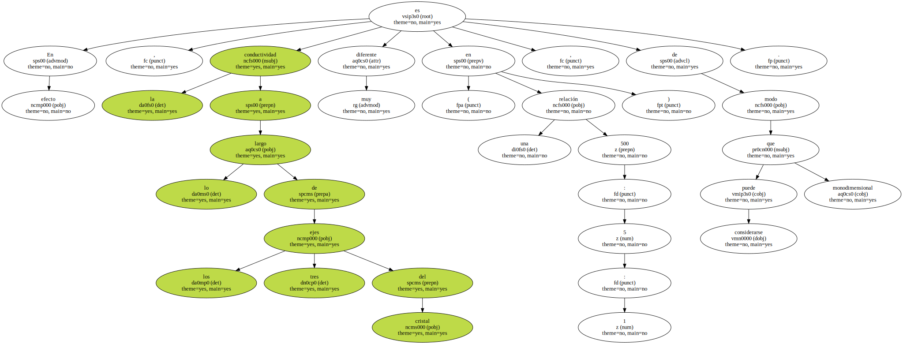

Por consiguiente , es condición necesaria que 0 - d - 1.

Además del grado fraccional de transferencia de carga , ésta tiene que estar deslocalizada a lo largo del apilamiento.
Cuanto más próximas se encuentren las moléculas en el apilamiento , mayor será el solapamiento de los orbitales entre ellos y , en consecuencia , mayor será la deslocalización de la carga.
En los casos estudiados esta distancia está en el rango de 3,2 - 3,5 angstroms.
De otro lado , las propiedades conductoras de los materiales moleculares se ven muy afectadas por las interacciones entre los sistemas electrónicos y las vibraciones del retículo cristalino , llegando en el caso extremo a producirse a bajas temperaturas ( próximas al cero absoluto ) una distorsión del retículo ( transición de Peierls ) acompañada de una transición del comportamiento metálico a aislante.
En este sentido , los metales orgánicos tipo CTC muestran en general una acusada dependencia de la conductividad con la temperatura.
Así , a temperatura ambiente , el TCNQ-TTF tiene un valor de 500 ( el correspondiente valor para el cobre es 6.105 ).
A medida que la temperatura disminuye , la conductividad aumenta hasta alcanzar a=10 a 59 K ( fig. 3 ).
Sin embargo , por debajo de 59 K a cae bruscamente y la sustancia se comporta como un semiconductor , a consecuencia del mencionado - efecto Peierls - , en cierto modo análogo al efecto Jan-Teller.
Una segunda e importante característica de la conductividad del complejo TCNQ-TTF es su carácter fuertemente anisotrópico.
En efecto , la conductividad a lo largo de los tres ejes del cristal es muy diferente ( en una relación 500 : 5 : 1 ) , de modo que puede considerarse monodimensional.
